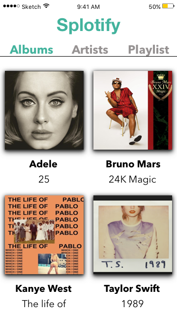
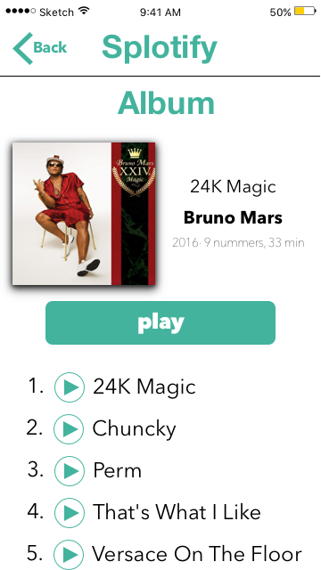
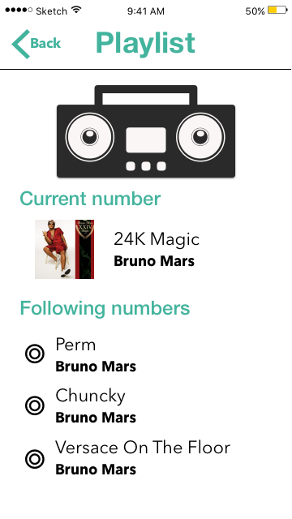
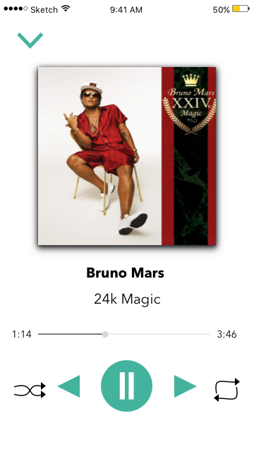

Splotify
Vak: Studieregiepunt (SRP)
Als onderdeel van de studie moet je studiepunten zelf invullen. Dit door eigenprojecten of door cursussen te volgen
Opdracht: Leer Sketch en Principle kennen en ontwerp Splotify.
Wat heb ik geleerd: Sketch en Principle
Deze SRP heeft mij erg geholpen om Sketch en Principle te begrijpen en er ook wat daadwerkelijk mee kunnen ontwerpen. Voor een aantal weken had ik les in alleen dit door een oudere jaars. Hij liet ons eerst tussen opdrachten maken en daarna Splotify maken.



